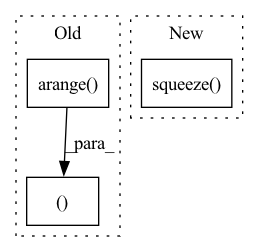

Pattern ID :19244
Before Change
layer = self.layers
elif layer > self.layers:
raise ValueError(f"Number of layers specified ({layer}) exceed layers in model ({self.layers})!")
representations1 = hidden_states[torch.arange( num_inputs) [:, None], query_idx1 ].mean(1)
representations2 = hidden_states[torch.arange(num_inputs)[:, None], query_idx2].mean(1)
else:
representations1 = list(map(lambda x: x[torch.arange(num_inputs)[:, None], query_idx1].mean(1), hidden_states))After Change
elif layer > self.layers:
raise ValueError(f"Number of layers specified ({layer}) exceed layers in model ({self.layers})!")
representations1 = torch.stack([hs.squeeze()[idx[0]:idx[1]].mean(0) for hs, idx in zip(hidden_states.split([1] * num_inputs), query_idx1)])
representations2 = torch.stack([hs.squeeze() [idx[0]:idx[1]].mean(0) for hs, idx in zip(hidden_states.split([1] * num_inputs), query_idx2)])
else:
representations1 = list(map(lambda x: torch.stack([hs.squeeze()[idx[0]:idx[1]].mean(0) for hs, idx in zip(x.split([1] * num_inputs), query_idx1)]), hidden_states))
representations2 = list(map(lambda x: torch.stack([hs.squeeze()[idx[0]:idx[1]].mean(0) for hs, idx in zip(x.split([1] * num_inputs), query_idx2)]), hidden_states))In pattern: SUPERPATTERN
Frequency: 3
Non-data size: 3
Instances Fragment ID: 62491449
Project Name: kanishkamisra/minicons
Commit Name: b9f76e2dfc167677a5e1a4877b8bc76799a01974
Time: 2021-08-21
Author: menogetusername@gmail.com
File Name: minicons/cwe.py
M Class Name: CWE
N Class Name: CWE
M Method Name: extract_paired_representations(3)
N Method Name: extract_paired_representations(3)
M Parent Class: object
N Parent Class: object
M File Name: minicons/cwe.py
N File Name: minicons/cwe.py
M Start Line: 151
M End Line: 170
N Start Line: 151
N End Line: 170
Before Change
layer = self.layers
elif layer > self.layers:
raise ValueError(f"Number of layers specified ({layer}) exceed layers in model ({self.layers})!")
representations = hidden_states[torch.arange( num_inputs) [:, None], query_idx ].mean(1)
else:
representations = list(map(lambda x: x[torch.arange(num_inputs)[:, None], query_idx].mean(1), hidden_states))
After Change
elif layer > self.layers:
raise ValueError(f"Number of layers specified ({layer}) exceed layers in model ({self.layers})!")
// representations = hidden_states[torch.arange(num_inputs)[:, None], query_idx].mean(1)
representations = torch.stack([hs.squeeze() [idx[0]:idx[1]].mean(0) for hs, idx in zip(hidden_states.split([1] * num_inputs), query_idx)])
return representations
Fragment ID: 62491448
Project Name: kanishkamisra/minicons
Commit Name: b9f76e2dfc167677a5e1a4877b8bc76799a01974
Time: 2021-08-21
Author: menogetusername@gmail.com
File Name: minicons/cwe.py
M Class Name: CWE
N Class Name: CWE
M Method Name: extract_representation(3)
N Method Name: extract_representation(3)
M Parent Class: object
N Parent Class: object
M File Name: minicons/cwe.py
N File Name: minicons/cwe.py
M Start Line: 109
M End Line: 132
N Start Line: 110
N End Line: 132
Before Change
// x.shape = [batch_size, n_ctx, transformer.width]
// take features from the eot embedding (eot_token is the highest number in each sequence)
x = x[torch.arange( x.shape[0]), text.argmax(dim=-1) ] @ self.model.text_projection
return x
After Change
raise TypeError(f"Unknown keywords type {type(keywords)}")
res = {}
dist = torch.cdist(keywords, self.model.token_embedding.weight).squeeze( 1)
nearest_dist, nearest_token = torch.min(dist, dim=-1)
res["nearest_token"] = nearest_token.unsqueeze(1)
res["mean_dist"] = torch.mean(nearest_dist, dim=0)
Fragment ID: 62491447
Project Name: atosystem/speechclip
Commit Name: 106090955ff664521b6d7c8916c8bea28cbe4b1e
Time: 2022-05-03
Author: jeff890322@gmail.com
File Name: avssl/module/clip_official.py
M Class Name: ClipModel
N Class Name: ClipModel
M Method Name: encode_keywords(3)
N Method Name: encode_keywords(3)
M Parent Class: nn.Module
N Parent Class: nn.Module
M File Name: avssl/module/clip_official.py
N File Name: avssl/module/clip_official.py
M Start Line: 326
M End Line: 341
N Start Line: 325
N End Line: 351